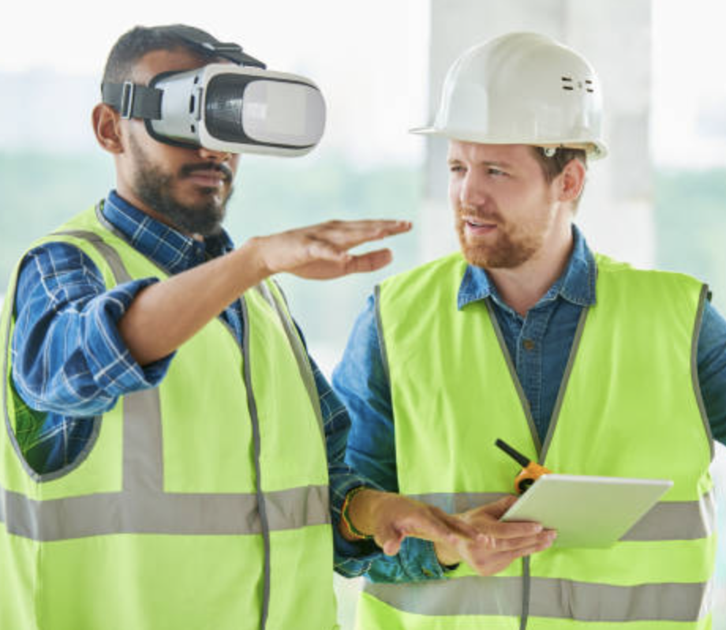
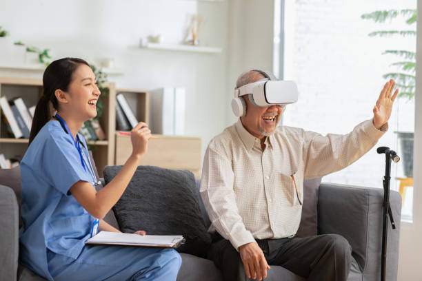

VRtual TECH
Architecture and Design: Architects and designers utilize VR to create virtual walkthroughs of their projects, make decisions about spaces before they are built. This not only saves time and money but also ensures that the final product meets the client's expectations.
VR is being employed for therapeutic purposes, aiding in pain management, stress reduction, and rehabilitation. can expedite the healing process. VR exposure therapy is also used to treat conditions like PTSD and phobias.
VR has revolutionized education and training by enabling immersive, hands-on experiences. Students can explore historical events, dissect virtual organisms, or even practice surgery without real-world consequences.
VR headsets immerse players in captivating virtual worlds, offering a truly immersive gaming experience. Gamers can explore fantasy realms, engage in high-intensity simulations, and interact with in-game elements like never before, creating an entirely new level of engagement and excitement.

